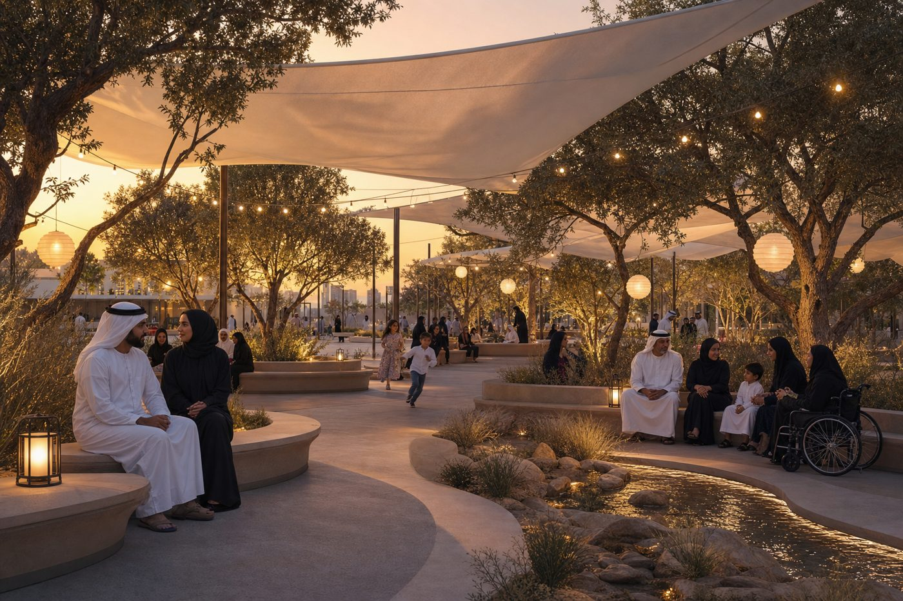
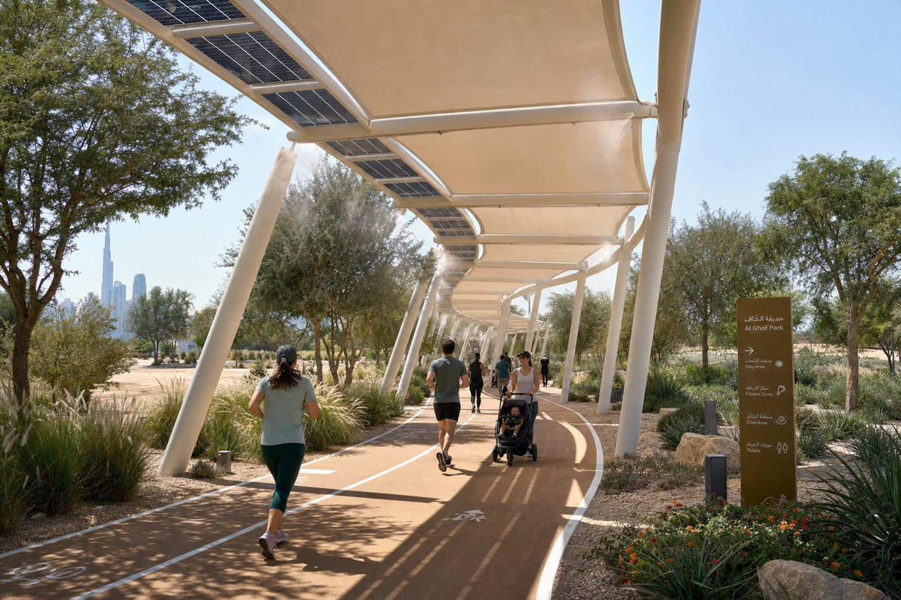

Five moves that turn a hot lawn into a year‑round oasis
ZILAL (Arabic for “shades / canopies”) organises the whole park around one native tree — the Ghaf, the UAE's national tree — and one goal: keep people comfortable, connected and outdoors from 05:00 to 23:00, all year.
The Cool Loop
A continuous, 100%‑shaded walking/running/cycling circuit under solar‑pergola canopies, its path geometry optimised by AI so it stays in shade at 3 pm in July.
The Majlis Grove
The social heart: clustered shaded majlis rooms under a grove of Ghaf & Sidr trees, tuned to the 6 pm peak — family gathering, picnics, quiet seating.
Adaptive Play & Sport
Existing courts retained & shaded, plus an all‑abilities, sensory playscape designed with the neighbouring health centre and school in mind.
The Sponge Garden
Xeriscape planting, bioswales and AC‑condensate + greywater reuse cut irrigation demand — while retaining & augmenting the park's existing mature trees into a living desert garden.
The Solar Canopy Spine
PV pergolas shade by day and power lighting, misting and the app by night — the park runs energy net‑positive.
Community & commerce
Distinctive gateway entrances (Identity), food/craft market kiosks, a dog run, prayer space, and a seasonal events calendar — hitting the Manual's commercial & events targets.

